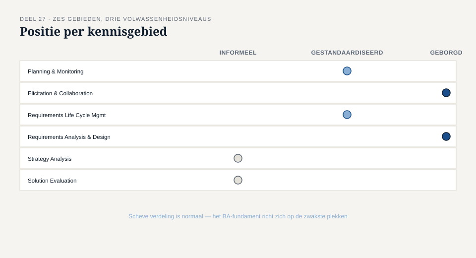
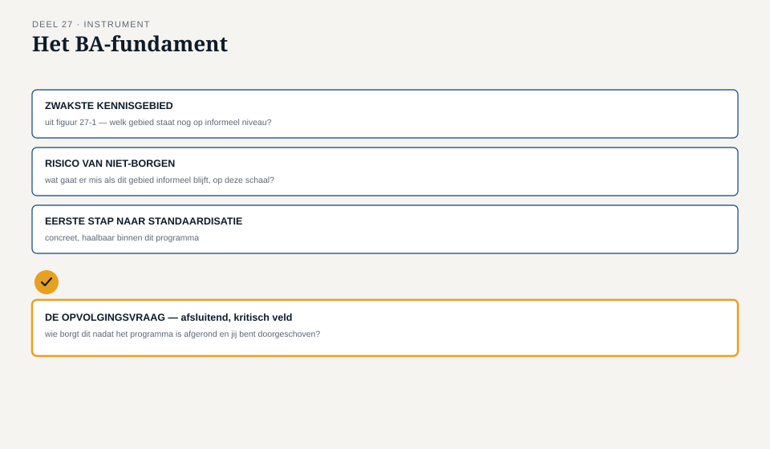

Deel 27 — De BA-functie inrichten: standaarden, volwassenheid, begeleiding van junioren
Slidedeck · Ductus-cursus Business-analyse · niveau 3 · deel 27 van 30 · 22 slides
Slide 1 — Titel
Business-analyse — deel 27 De BA-functie inrichten: standaarden, volwassenheid, begeleiding van junioren
Slide 2 — Terugblik
Deel 26: één stopadvies, goed onderbouwd.
Vandaag: kan de hele organisatie dat oordeel vellen — niet alleen jij?
Slide 3 — Hannekes vraag
"Stel dat je morgen zes maanden met verlof moet. Wie keurt dan de requirements af die niet goed genoeg zijn?"
Stilte.
"Eerlijk gezegd... waarschijnlijk niemand op dezelfde manier."
Slide 4 — Geen kritiek op Merel
Een structureel risico dat zij zelf nooit zo scherp had gezien.
Slide 5 — Waar we het over gaan hebben
- Standaarden: organisatiebreed of situationeel
- Volwassenheid per kennisgebied
- Begeleiding van junioren, gericht
- Het BA-fundament
Slide 6 — Niet alles verdient dezelfde status
Besluitenlogboek: waarde zit in consistentie → standaard. Aanpakkeuze: hangt af van de situatie → situationeel.
Slide 7 — [Opdracht 2]
Drie instrumenten. Standaard, of situationeel?
Slide 8 — Drie niveaus van volwassenheid
Informeel — hangt af van de persoon Gestandaardiseerd — vastgelegd, bekend, consistent gebruikt Geborgd — actief gecontroleerd en onderhouden
Slide 9 —

Zes kennisgebieden, gepositioneerd op de drie niveaus
Slide 10 — Bij Meridiaan
RLCM: redelijk gestandaardiseerd. Afkeuring en stopadvies: nog vrijwel volledig aan Merels persoon gebonden.
Slide 11 — [Opdracht 3]
Schat de volwassenheid van drie kennisgebieden.
Slide 12 — Begeleiding: gericht, niet algemeen
Twee eerdere instrumenten geven een concreet startpunt.
Slide 13 — Competentiespiegel + BA-urenlogboek
Het ene laat zien wát ontbreekt. Het andere laat zien waaróm dat zo zou kunnen zijn.
Slide 14 — [Opdracht 1]
Sanders weinig SE-uren + zijn eerdere terughoudendheid bij Bram — toeval, of samenhang?
Slide 15 — Begeleiding is ook: overdragen
Merel draagt doelbewust een deel van haar eigen taak over — met ruimte om het de eerste keer verkeerd te doen.
Slide 16 — Terug naar Ayla
Niveau 1, deel 3: het recht om door te vragen moet gegeven worden, niet alleen uitgelegd.
Slide 17 — De werkvorm van dit deel
Het BA-fundament
Standaarden · Volwassenheid · Begeleidingsplannen
Slide 18 — Het veld dat het verschil maakt
Welke standaard bestaat alleen omdat één specifieke persoon er is —
en wat gebeurt er als die persoon wegvalt?
Slide 19 — Hannekes vraag, geformaliseerd
De vraag die de meeste organisaties liever niet stellen.
Slide 20 —

Het BA-fundament — met de opvolgingsvraag als afsluitend veld
Slide 21 — [Opdracht 4]
Vul het BA-fundament in, met een begeleidingsplan voor Sander.
Slide 22 — Volgende keer
Wat als de organisatie het juiste antwoord niet wíl horen, ook als het geborgd is wie het kan geven?
Deel 28: oordeel, ethiek en tegenspraak.